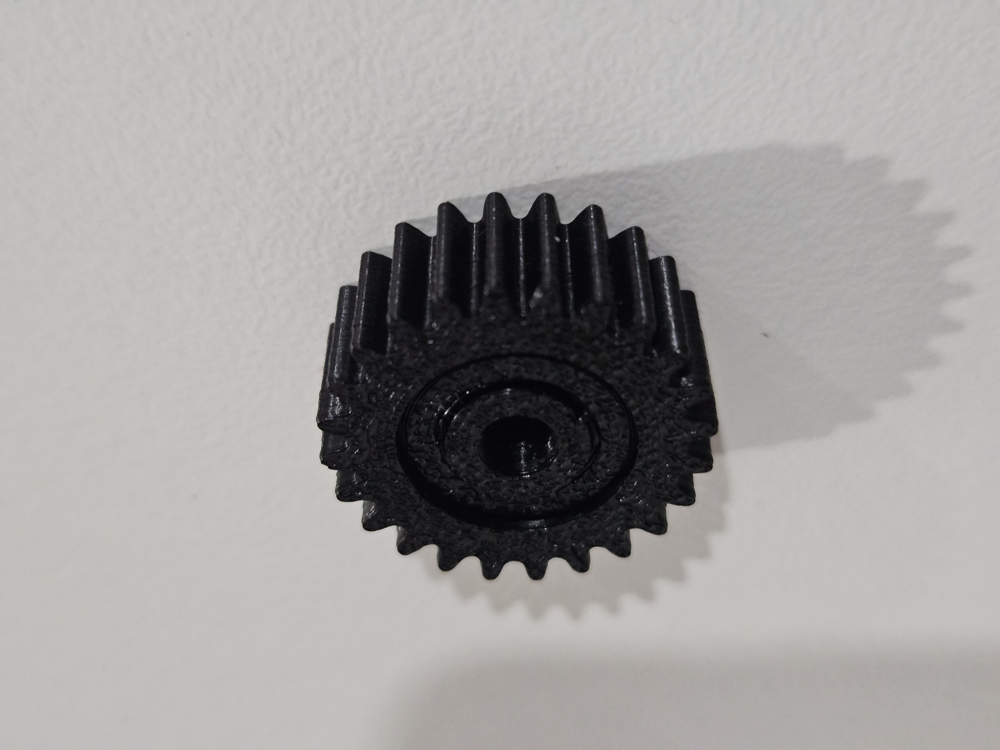
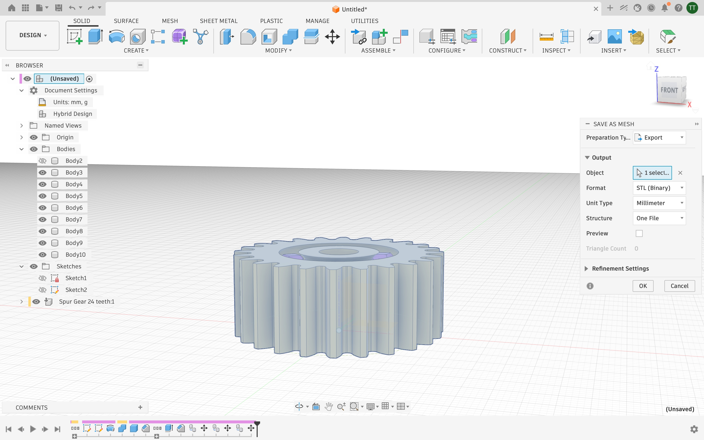
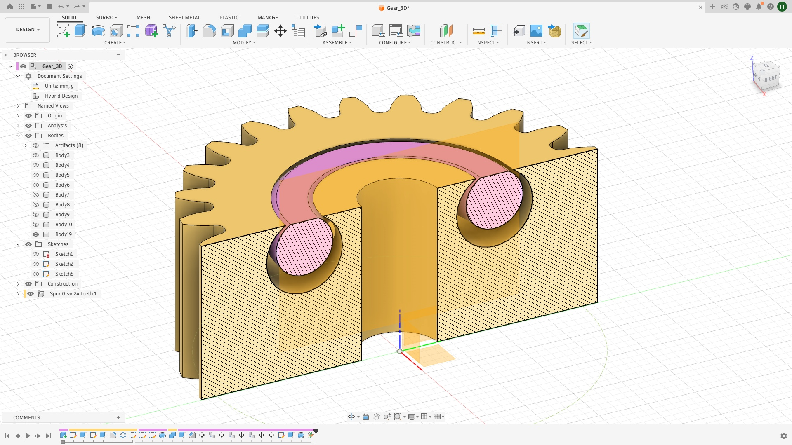
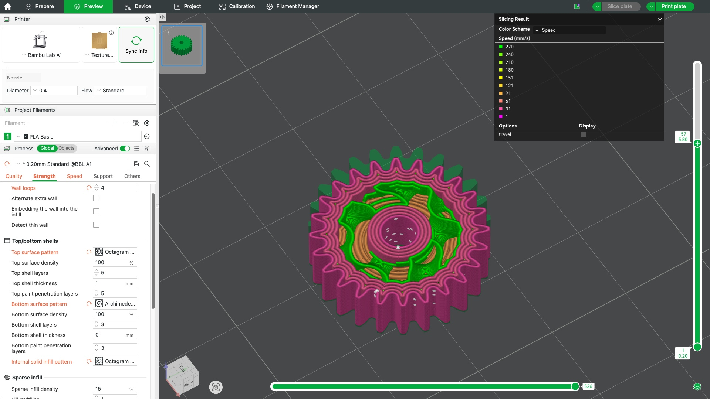
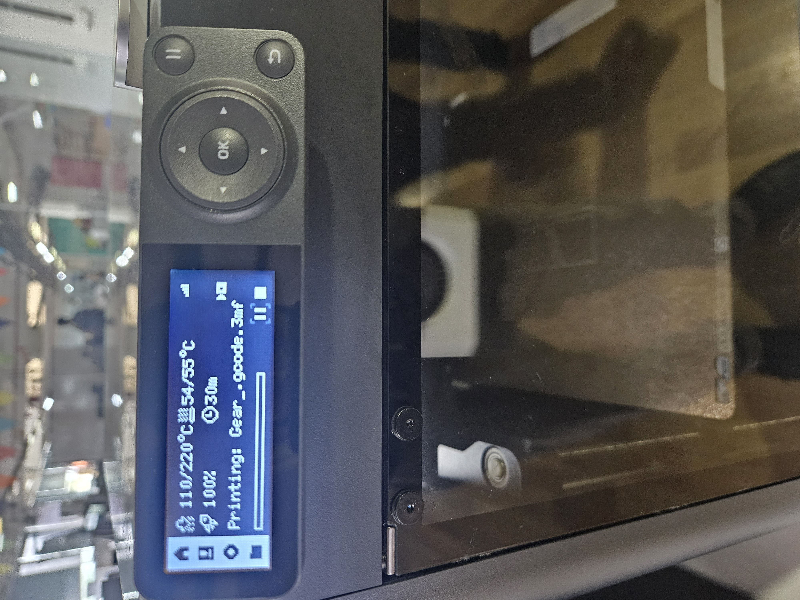

Finished 3D printed spur gear — PETG filament, Bambu Lab printer
This week explored additive manufacturing — designing a 3D model, preparing it for printing using a slicer, and understanding how print settings affect the final output. I designed a spur gear in Fusion 360, exported it as an STL, sliced it in Bambu Studio, and printed it on a Bambu Lab printer.

Designing the Gear in Fusion 360
I designed a spur gear in Fusion 360 using the gear generator under the Design tab. The model was built up across multiple bodies visible in the browser panel on the left. Once the geometry was finalised, I used the Save as Mesh dialog to export the design as an STL file in millimetres — the standard format for 3D printing. The export was set to One File structure to keep all bodies together.

Inspecting the Internal Structure
Using Fusion 360's section analysis tool, I cut through the gear to examine its internal geometry. The cross-section reveals a hollow core with two circular cutouts on either side of the hub, reducing material usage while maintaining structural integrity. The hatching pattern in the view clearly distinguishes solid material from empty space, confirming the design is ready for efficient 3D printing with minimal infill required.

Slicing in Bambu Studio
The STL was imported into Bambu Studio and sliced for a Bambu Lab printer using PLA Basic filament. The colour map on the right shows the print speed across the model — slower speeds (cooler colours) on fine outer walls and faster speeds (warmer colours) on interior fills. Settings such as top/bottom surface patterns, shell layers, infill density, and sparse infill were configured in the left panel. The sliced preview confirms clean layer paths across the gear teeth.

Printing
The .3mf file with g-code was transferred to the Bambu P1C printer with a micro USB card. The file was selected from the printer UI and print started.